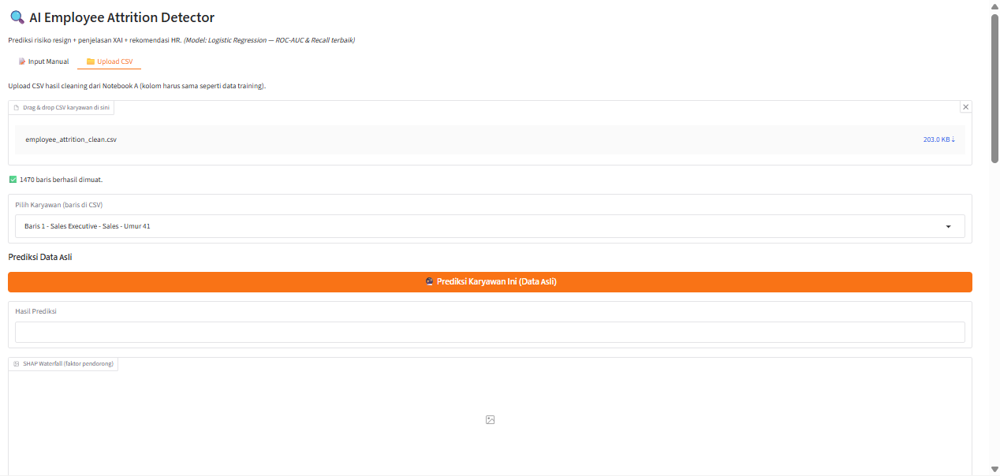

Unggah Data
Unggah CSV hasil cleaning dari Notebook A: kolomnya wajib sama seperti data training, dan 1.470 baris langsung termuat.
Kerangka analitik human capital yang dapat dijelaskan: Logistic Regression terkalibrasi memperkirakan peluang resign, SHAP membuka "mengapa"-nya per fitur, dan LLM (Llama 3.3 via Groq) menerjemahkan angka itu menjadi narasi serta rekomendasi retensi lengkap dengan simulasi what-if untuk analitik preskriptif.

Dari baris CSV menjadi keputusan HR yang bisa dijelaskan, dalam empat langkah.
Unggah CSV hasil cleaning dari Notebook A: kolomnya wajib sama seperti data training, dan 1.470 baris langsung termuat.
Setiap baris CSV ter-load sebagai opsi di dropbox "Pilih Karyawan", lengkap dengan role, departemen, umur, dan tahun kerja.
Satu tombol menghasilkan probabilitas resign plus waterfall SHAP: fitur mana yang mendorong naik, mana yang menahan.
LLM via Groq menerjemahkan angka SHAP menjadi ringkasan, faktor utama, dan rekomendasi intervensi berbahasa manusia.
Geser otomatis setiap 10 detik; klik gambar untuk melihat lebih detail.
Baseline kompetitif dulu, baru pilih model berdasarkan metrik yang relevan untuk HR.
10 algoritme diadu via RandomizedSearchCV pada dataset IBM HR Attrition (1.470 baris, 35 atribut), lalu divalidasi ulang dengan Repeated Stratified K-Fold. Logistic Regression keluar sebagai pemenang bukan karena paling rumit, tapi karena paling seimbang menangkap kelas minoritas "resign".
Stack yang menopang seluruh sistem.
Poin-poin yang membuat sistem ini berguna bagi HR.
Notebook eksperimen, modul simulasi what-if, dan seluruh kode sistem tersedia di repo ini. Dikembangkan sebagai Tugas Akhir di ULBI; jurnalnya sedang diajukan ke JANAPATI.